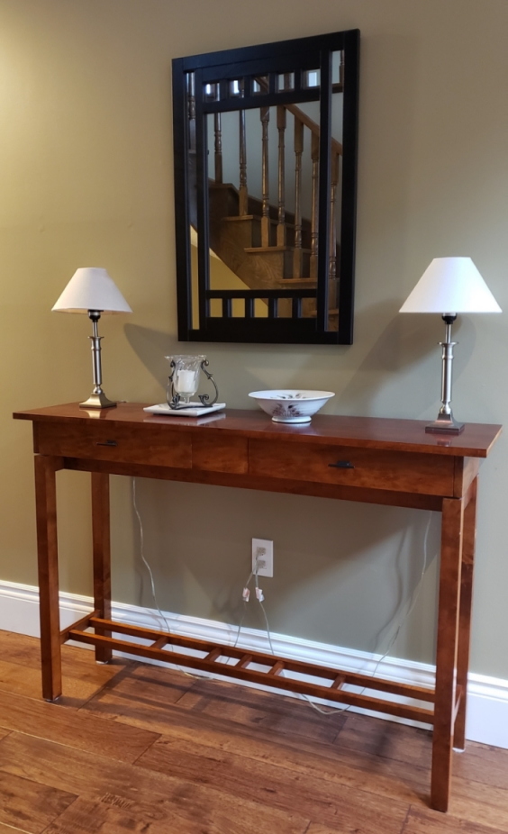
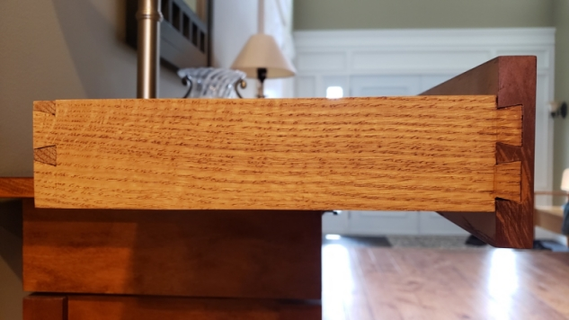
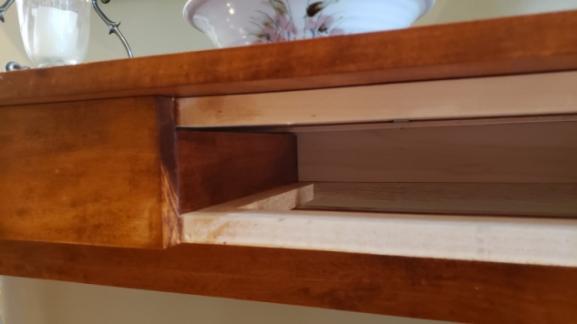
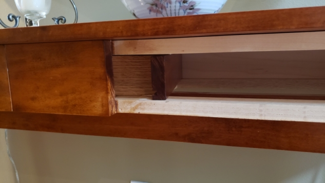
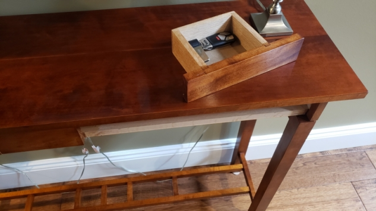
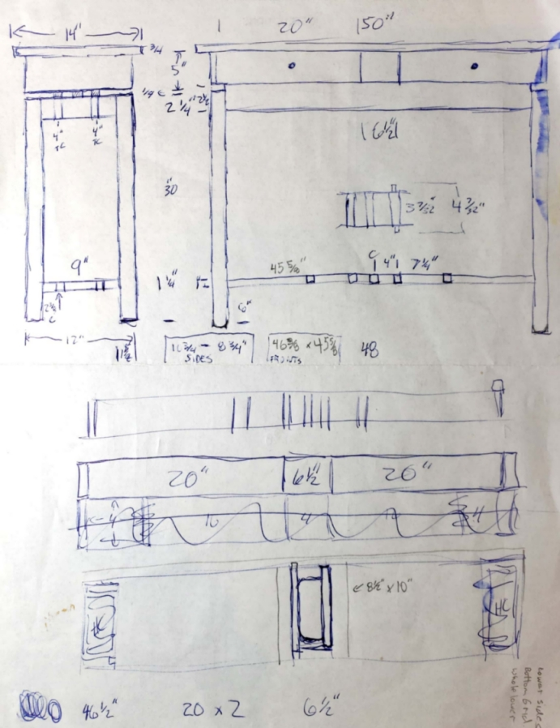

Hall Table

The real push to begin woodworking came shortly after moving into our house in Newmarket in 2011. The house had space to set up a workshop, I purchased a table saw and began buying some of the essential woodworking tools, driven by the incentive to build a hall table for my wife's birthday.
The challenges set building the hall table were as follows:
- Custom floating top section design
- Hand-cut dovetailed drawers
- Include a secret compartment
- Use shellac for the finish
Once I had sketched out the design, the only concern I had was that the end grain of each side piece would be visible from the front. I sketched different variations but settled on staying with the original design. Not having the legs connect to the table carcass presented design challenges that were resolved as I went along with the build. I didn't use a reference plan and hadn't researched any similar furniture that strayed from the traditional mortise and tenon construction of most tables. Overall the design met the functional requirements but ended up somewhat overbuilt. I purchased the wood dimensioned and prepared because, at the time, I did not own any planes or machinery to surface rough-cut lumber. Not milling the wood myself, I used ¾" thick wood for the internal frame of the table which makes the drawer compartments too narrow and the overall construction heavier and more durable than necessary.
I selected maple as the primary wood for the visible table components and oak as the secondary wood for the drawers. I used ¼" HDF for the drawer bottoms due to time constraints, which in the future I may replace with pine as I used traditional drawer construction that makes it easy to replace them. Also, to meet another challenge, the drawers have dovetailed joints at the back and half-blind dovetails connecting the sides to the fronts.

I have always been intrigued by furniture that has secret compartments, so the center space between the two drawers leaves room for a hidden drawer. To access the hidden drawer, you remove the right-side drawer, reach your hand to the back left-hand side of the opening, and push lightly to lever the hidden drawer enough to grasp the front edge to remove it from the compartment. There is limited storage room, but enough to hide cash, keys or other small items and it satisfies one of the challenges I set out for myself on this project. Even with the right drawer removed, it is impossible to see the hidden drawer inside the table.



Maple is a very light-coloured wood that doesn't take a traditional stain well and I wanted a relatively dark brown tone to go with the surrounding décor. Maybe I made the wrong wood choice, but I'm not a big fan of oak and maple was the only appealing hardwood available at the wood supplier. I mixed Russet Amber and Light Sheraton Mahogany aniline dyes to create a custom stain. One coat of the stain was sufficient to achieve the colour I wanted.
I then mixed a 2lb. cut of de-waxed orange shellac. For the first few coats, I thinned the shellac to a 1lb. cut as I had never applied shellac before and wasn't sure what to expect. The later coats used the full 2lb. cut. Getting the top to look smooth and polished, without brush lines or streak lines from the shellac drying too fast, was a problem on the tabletop. I think around the tenth coat I finally got a decent finish. The finish turned out perfectly. The surprise for me was the depth that the shellac finish provided. The tabletop has a beautiful 3D holographic look that I hadn't expected and has stood up pretty well over time. To finish the piece after letting the shellac cure, I added a couple of coats of Lee Valley's Blue Label Paste Wax for protection.
Somewhere along the line, someone left a sweating water bottle on the table overnight which left a white water ring that sat that way for a few years. Finally, in 2019 I decided to repair the tabletop after a second water ring appeared. The first step was to remove the wax. I first attempted a white vinegar and water solution and then wiped the top with mineral spirits to fully dissolve the wax.
Next, I lightly sanded the top with 400-grit sandpaper. I then mixed a fresh batch of 2lb. cut orange shellac, but this time I applied it with a polishing pad.
When applied, shellac partially dissolves the previous layer and binds directly with it, creating one solid finishing coat. To complete the top repair, I applied the shellac with a pad running it with the grain from one end of the top to the other in smooth continuous overlapping strokes. Once dried, I sanded with 400-grit sandpaper again and applied a second coat. The results were far better than the original finish and the water rings vanished.
I had just finished reading an article on shellac finishing that suggested applying the paste wax with 0000 steel wool to smooth and polish the finish, so I decided to try it. This technique took away some of the gloss and from certain angles in the light, you can see the fine scratch marks left by the steel wool. Nobody will notice but me, but my quest for the perfect shellac finish continues and I'll have to try something new the next time. Maybe a traditional French polish technique that rubs out the finish with pumice.
The hall table has sat in our main hall for over a decade and it has held up remarkably well with only a small ding on the front right leg where someone or something bumped into it. I intend to make another version, most likely from walnut and with minor variations. Next time I'll add a little more space between the base and the upper drawer cabinet and use thinner material to modify the construction of the internal frame.
Hall Table
-
Dimensions: 14" D x 52" W x 35" H
-
Wood: maple and oak
-
Finish: mixed aniline dye (Russet Amber and Light Sheraton Mahogany) and dewaxed orange shellac
